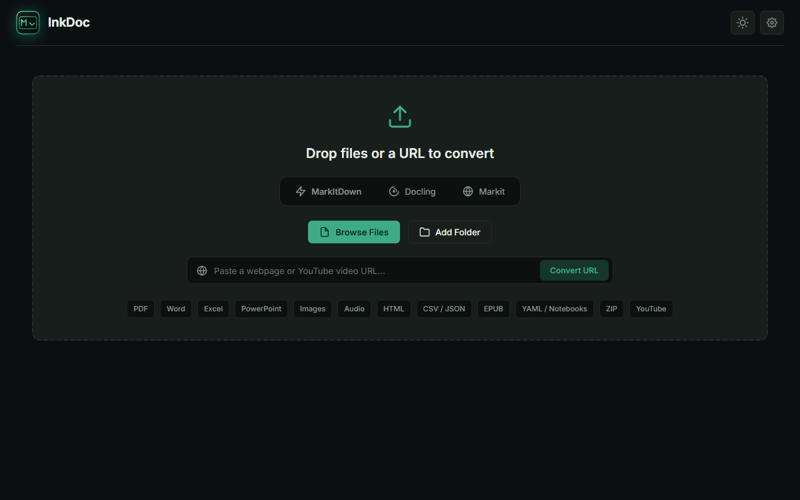

Drop a file. Get Markdown. Done.
A free, open-source desktop app for Microsoft's markitdown.
Drag any file or paste a URL, and it converts and saves straight to your
Downloads folder. No manual export step, no CLI required.
Unofficial, open-source, not affiliated with Microsoft.


Why this exists
markitdown itself is a command-line tool: you run it, redirect output, manage files yourself. This wraps the same engine with no export step. Drop a file and the .md lands in Downloads the moment it converts.
Auto-saves to Downloads, always
The moment a file finishes converting, the .md lands in your Downloads folder under its original name. Name collisions get a safe numeric suffix instead of overwriting anything. No export dialog to remember.
Live preview
Rendered or raw Markdown, editable before saving a copy elsewhere.
Light & dark themes
Follows your system automatically, or switch manually.
English & Spanish
Switch live from the menu bar, no restart needed.
Advanced options, out of the way
Plugins, Azure Document Intelligence, and format hints live in a separate settings dialog.
How it works
Drop a file
Or click the drop zone to browse, or paste a URL.
It converts
Runs in the background. The interface never freezes, even on large batches.
Find it in Downloads
The .md file is already there. Double-click the row to open its folder.
Supported formats
Anything markitdown supports:
Install & run
Grab a ready-to-run build for your platform, or run from source.
Windows
Setup wizard or portable .exe, no Python required.
macOS
Packaged app bundle, zipped.
Linux
Packaged app bundle, zipped.
Because InkDoc is a free open-source project without a paid commercial certificate, Microsoft Defender SmartScreen may display an "Unrecognized app" prompt. Simply click "More info" → "Run anyway". InkDoc is 100% open-source, virus-free, and reproducible.
Run from source
For contributors or other platforms. Requires Python 3.10+.
git clone https://github.com/AbdoslamB/inkdoc.git cd inkdoc python -m pip install -r requirements.txt run.bat
git clone https://github.com/AbdoslamB/inkdoc.git cd inkdoc python3 -m pip install -r requirements.txt ./run.sh